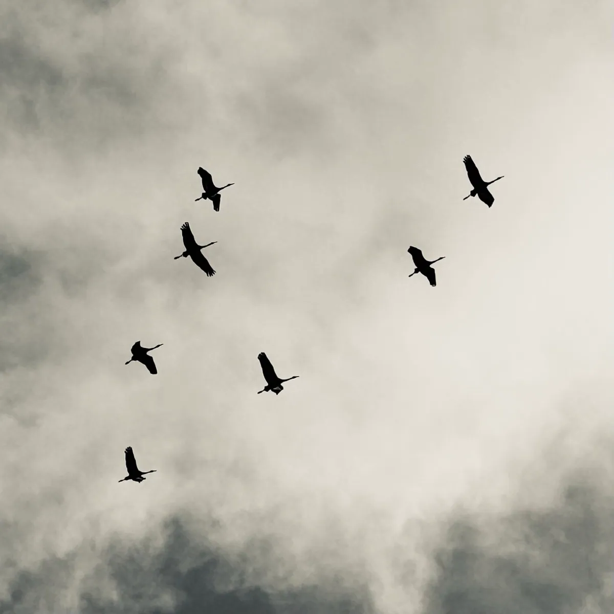
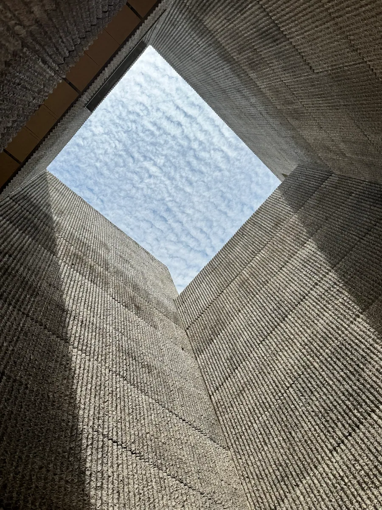
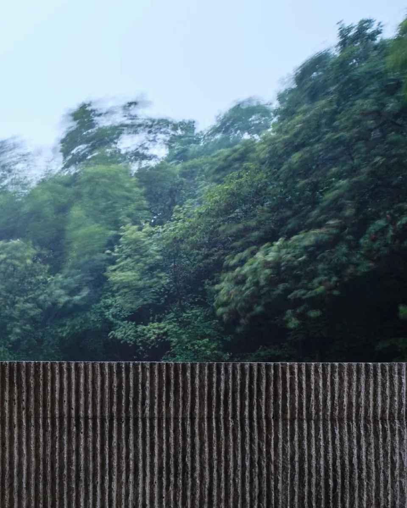
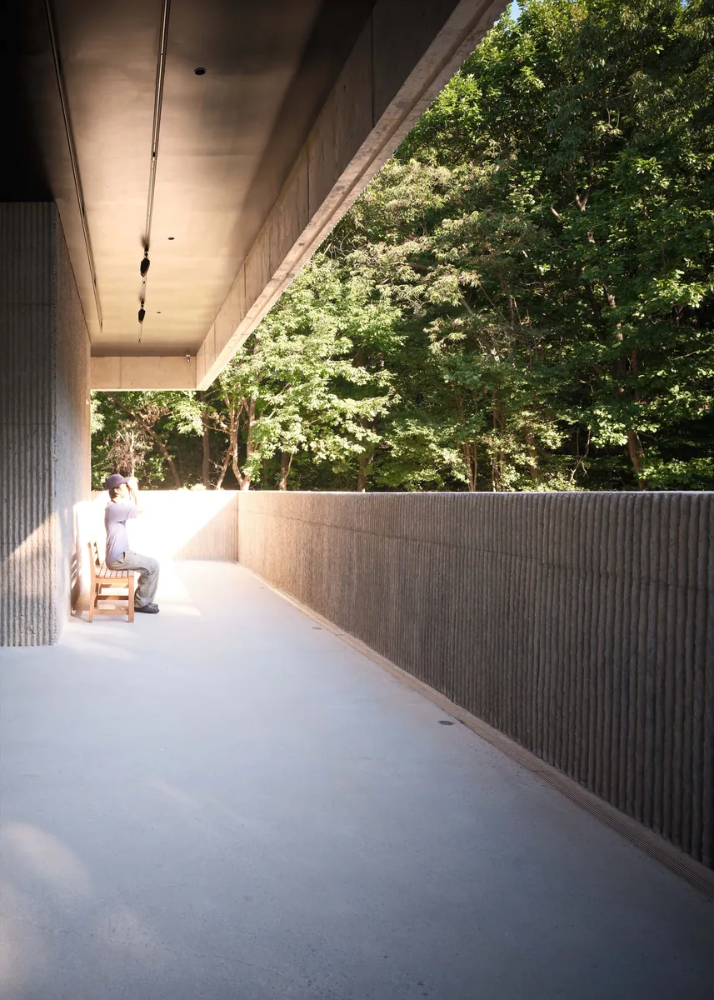
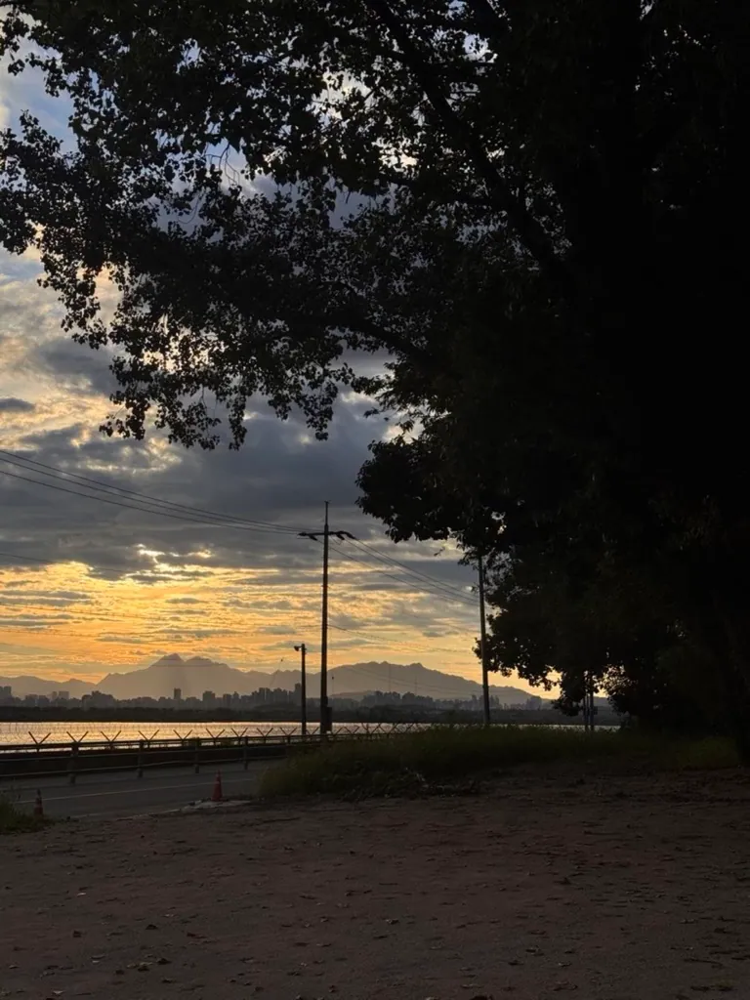
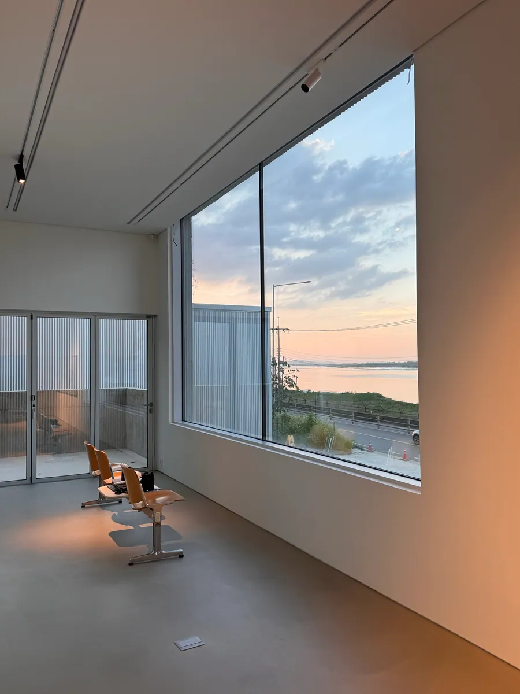
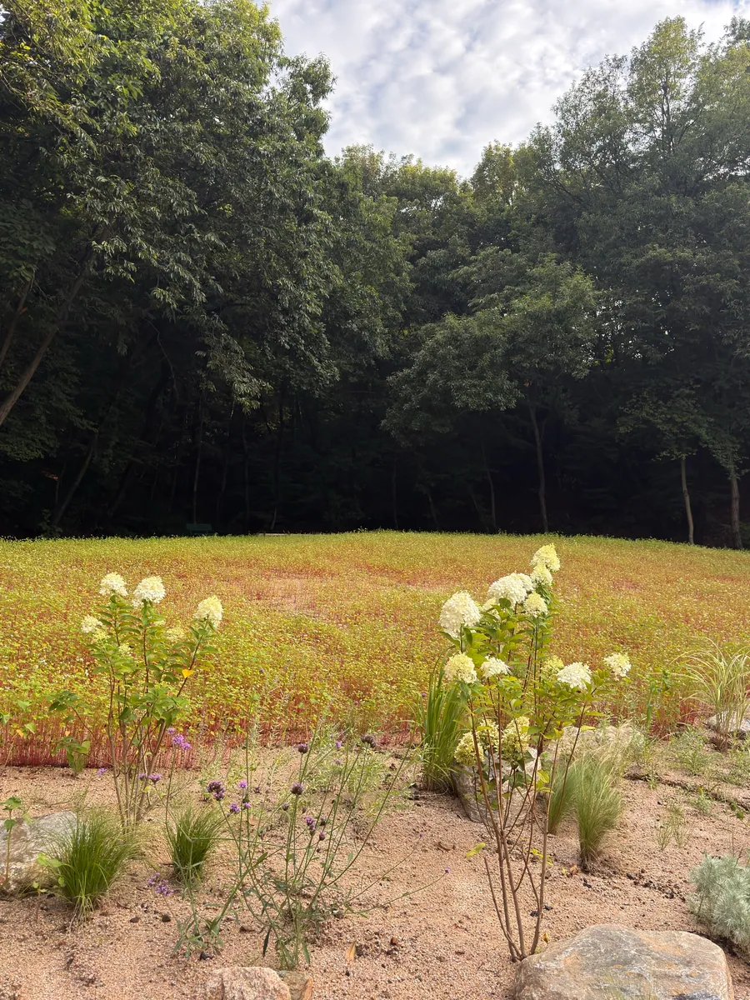
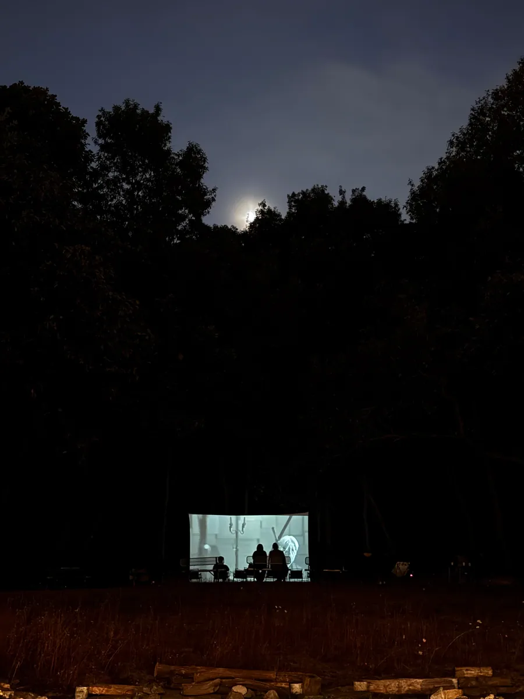
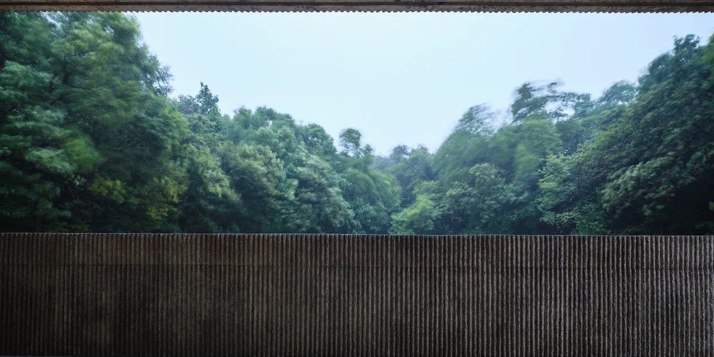

NEWSCAPE
Leave the noise,
Find the flat.

한강 하구가 시작되는 김포의 강변,
사방(NEWS — North·East·West·South)의 풍경을 담아 지어진 공간
NEWSCAPE가 2026년 10월 9일 문을 열었습니다.
기후위기, 만성화된 갈등과 분열 그리고 변동성과 불확실성의 시대에
예술과 자연 그리고 인간이 유기적으로 연결되어
아름다움이라는 소속감으로 연대할 수 있는 개방형 스튜디오를
약 10년의 준비와 2년의 공사 기간을 거쳐 완공하였습니다.

뉴스케이프는 경기도 김포시 고촌읍 금포로 513, 515에 위치합니다.
옛 지명은 풍곡리(楓谷里)이며, 이름처럼 바람이 급류처럼 흐르고
하루 두 번 밀물과 썰물이 각기 다른 높이로 드나드는 곳입니다.
이 장소를 결정하는 데 큰 영향을 미친 이유 중에 하나는,
지난 10여년 동안 제주에서 찾아다닌 숨구멍과 같은 굼부리(분화구)의 풍광을 빼닮았고
자연스럽게 건축을 품은 둥지 같은 모습을 상상해 왔기 때문입니다.
강 건너편 북쪽으로는 생물다양성의 보고이자
수양버들 군락지인 장항습지(람사르 습지)가 숨을 쉬며,
대문 밖 동편으로는 둘레 3.3m·3.4m의 미루나무 암그루 한 쌍이 서있습니다.

대문 밖 동편으로는 둘레 3.3m·3.4m의
미루나무 암그루 한 쌍이 우뚝 서있습니다.
한여름에는 거대한 파라솔이 되어주고,
바람이 불 때는 잔잔한 파도소리를 들려줍니다.
오래전에는 강변에 흔한 나무였다지만 지금은 대부분 사라져버리고
전쟁과 개발의 풍파에도 우뚝하게 남아있는 한강의 가장 큰 노거수일 것입니다.
그 나무 아래 서면 저만치 북한산 백악능선이 뉴타운과 겹쳐서 한눈에 펼쳐집니다.

한편 이곳은 반세기가 넘도록 강변을 따라
대남침투 방지용으로 설치된 철책이 시작되는 곳으로서,
강변은 민간인 통제구역이기도 합니다.
하지만 그 덕분에 마치 DMZ 처럼 인간의 발길이 없어
매년 멸종위기종인 재두루미가 희박하게 관측되며,
큰기러기를 포함해 매년 3만여 마리의 철새들이
시베리아와 툰드라 지역에서 6,000km가 넘는 거리를 날아와 겨울을 나는 곳입니다.
저는 이곳을 도시생활로 인해 희미해진 생태 감각과 지쳐있는 심신을
도심으로부터 가장 가깝게 예술과 자연으로 보듬을 수 있는 장소라 느꼈습니다.

서쪽으로는 민물과 바닷물이 교차하는 조강(祖江) 지역이자,
한국전쟁 이후 금단의 수역인 서해가 시작되는 저편으로
노을이 아득히 개성 부근의 산줄기를 드리웁니다.

쉼 없이 흐르고 이동하는 만물들이
서로 다른 방향과 속도로 표류하는 것을 무심히 바라볼 수 있는 창을 통해
우리의 삶이 픽셀로는 기록할 수 없는
짧은 한편의 무비릴스 같음을 깨닫게 됩니다.

뒤뜰 남쪽으로는 흔히 참나무 6형제라 불리는
떡갈·갈참·신갈·상수리 등을 비롯해,
말똥가리부터 참매, 오색딱다구리까지 수많은 새들이
조림되지 않은 숲과 함께 조화를 이루고 살아가고 있습니다.

개관 프로그램 〈디파처스 DEPARTURES〉
(2026. 10. 10 – 12. 31.)
지난 10년, 조각에서 사진과 영상으로 이어져 온 장민승의 작업을
건축가와 긴밀히 고안한 공간에서 되짚는 전시와 상영으로 채워집니다.

뉴스케이프에서 어떤 방해도 없이 권태롭게 머물며
무심히 자신만의 장면이 마음에 새겨지시기를 희망합니다.
— 2026년 가을 뉴스케이프 디렉터
장민승 배상
방문 및 관람 안내
교통편
대중교통: 김포골드라인 고촌역에서 17번 마을버스 신동마을 하차 후 도보 300m
자전거: 한강자전거도로 이용 시 99% 전용 도로로 안전하게 방문 가능
주차: 전용 주차장 40대 무료 주차 완비